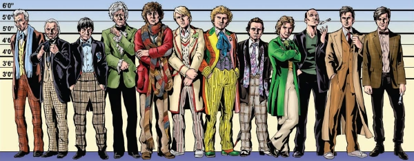

A series of themed media articles.
Art by Lee Sullivan
| Article Title | Parts | Pages | w indicates a wraparound coverCovers | Year(s) | Issues | Writer | Artist | Colourist | Letterer |
|---|---|---|---|---|---|---|---|---|---|
| Podcasts: The Pod Squad | 1 | 3 | 0 | 2010 | M293 | Alec Worley | reprints & designs | <-- | n/a |
| Comics in the Recession: The Slaughter Margin | 1 | 2 | 0 | 2010 | M295 | Michael Molcher | reprints & designs | <-- | n/a |
| Kick-Ass: It's All Kicking Off… | 1 | 4 | 0 | 2010 | M296 | Joel Meadows | reprints & designs | <-- | n/a |
| Comic Artists in Film: Screen Grab | 1 | 3 | 0 | 2010 | M296 | Joel Meadows | reprints & designs | <-- | n/a |
| Elric | 1 | 3 | 0 | 2011 | M313 | Joel Meadows | reprints & designs | <-- | n/a |
| Doctor Who: All of Time and Space | 1 | 3 | 0 | 2011 | M314 | Matthew Badham | reprints & designs | <-- | n/a |
| Western Comics: Grits & Gunsmoke | 1 | 4 | 0 | 2011 | M315 | Joel Meadows | reprints & designs | <-- | n/a |
| Mandarake: Manga Wonderland | 1 | 4 | 0 | 2012 | M320 | Andrew Osmond | reprints & designs | <-- | n/a |
| John Carter of Mars | 1 | 2 | 0 | 2012 | M322 | Joel Meadows | reprints & designs | <-- | n/a |
| Teenage Mutant Ninja Turtles: Turtle Recall | 1 | 4 | 0 | 2012 | M329 | Alex Fitch | reprints & designs | <-- | n/a |
Linked to TrifectaTrifecta: Best Laid Plans | 1 | 3 | 0 | 2013 | M333 | Michael Molcher | reprints & designs | <-- | n/a |
Linked to OrdinaryOrdinary: Ordinary People | 1 | 3 | 0 | 2013 | M340 | David Baillie | reprints & designs | <-- | n/a |
| TDW: Crossing Over | 1 | 3 | 0 | 2014 | M346 | Matthew Badham | reprints & designs | <-- | n/a |
| Comics Unmasked | 1 | 1 | 0 | 2014 | M348 | n/a | reprints & designs | <-- | n/a |
| The New Eagle: An Eighties Adventure | 1 | 5 | 0 | 2015 | M367 | Stephen Jewell | reprints & designs | <-- | n/a |
| How to Write a Future Shock: Shock Treatment | 1 | 4 | 0 | 2018 | M398 | Karl Stock | reprints & designs | <-- | n/a |
Linked to Operation OverlordEditions Glenat: A Day Long Remembered | 1 | 1 | 0 | 2019 | M404 | Richard Bruton | reprint | <-- | n/a |
| Future Shocks Radio: Aural Shocks | 1 | 2 | 0 | 2021 | M429 | Karl Stock | reprints & designs | <-- | n/a |
| 2000 AD Penguin Audiobooks: Listen to the Law | 1 | 2 | 0 | 2021 | M430 | Karl Stock | reprints & designs | <-- | n/a |
Full title: "Where Are They Now? / Part One: The Droids You've Been Looking For..."Where Are They Now? / Part One | 1 | 4 | 0 | 2022 | M442 | Karl Stock | reprints | <-- | n/a |
| I Am Because You Are Exhibition: Under the Influence | 1 | 2 | 0 | 2022 | M443 | Karl Stock | reprints | <-- | n/a |
Full title: "Where Are They Now? / Part Two: Brief Constructs"Where Are They Now? / Part Two | 1 | 4 | 0 | 2022 | M445 | Karl Stock | reprints | <-- | n/a |
| Jim Baikie in Orkney: Island Life | 1 | 1 | 0 | 2022 | M450 | editorial | reprints | <-- | n/a |
| Judge Dredd Boardgame: Law Games | 1 | 2 | 0 | 2022 | M450 | Karl Stock | reprints | <-- | n/a |
| Where Are They Now? / Part Three: Knocking Down Doors | 1 | 7 | 0 | 2023 | M452 | Karl Stock | reprints | <-- | n/a |
| Gerry Anderson Comcis: The Puppet Masters | 1 | 4 | 0 | 2023 | M453 | Stephen Jewell | reprints | <-- | n/a |
| Where Are They Now? / 4: Fan Up | 1 | 4 | 0 | 2024 | M467 | Karl Stock | reprints | <-- | n/a |
| Where Are They Now? / 5: Beyond 2000 | 1 | 6 | 0 | 2024 | M468 | Karl Stock | reprints | <-- | n/a |
| year | episodes | pages |
| 2007 | 0 | 0 |
| 2008 | 0 | 0 |
| 2009 | 0 | 0 |
| 2010 | 4 | 12 |
| 2011 | 3 | 10 |
| 2012 | 3 | 10 |
| 2013 | 2 | 6 |
| 2014 | 2 | 4 |
| 2015 | 1 | 5 |
| 2016 | 0 | 0 |
| 2017 | 0 | 0 |
| 2018 | 1 | 4 |
| 2019 | 1 | 1 |
| 2020 | 0 | 0 |
| 2021 | 2 | 4 |
| 2022 | 5 | 11 |
| 2023 | 2 | 11 |
| 2024 | 2 | 10 |
| 2025 | 0 | 0 |
| 2026 | 0 | 0 |
| 2027 | 0 | 0 |